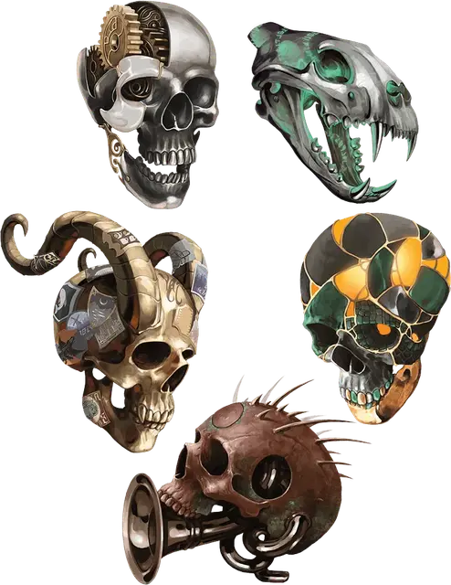

Мимир
Mimir
Чудесный предмет, редкий (требуется настройка)

Рекомендованная стоимость 501-5 000 зм
Это устройство в форме черепа наполнено знаниями. Устройство весит 5 фунтов и покрыто тонкой гравировкой планарных сигилов.
Бонусным действием вы можете подбросить устройство в воздух, после чего оно начнёт парить на расстоянии 1к3 фута от вас и вы сможете получить доступ к его свойствам. Пока Мимир парит, существо, отличное от вас, может действием попытаться схватить или связать устройство, либо успешно совершив безоружный удар против КД 22, либо успешную проверку Ловкости (Акробатика) Сл 22. Вы можете бонусным действием схватить и спрятать устройство.
Устройство имеет КД 22, 25 хитов, иммунитет к яду и психическому урону, а также сопротивление другим видам урона. Считается, что это носимый предмет, пока он парит рядом с вами.
Эзотерические знания. Пока устройство парит, вы можете действием наложить знание легенд [legend lore] устройством. Устройство произносит раскрытые знания вслух. После того, как это свойство будет использовано, его нельзя будет использовать снова до следующего рассвета.
Планарное знание. Устройство знает основную полезную информацию о планах существования. Пока устройство парит, оно устно отвечает на вопросы, которые вы или кто-либо, кого вы выбираете, задаете ему по этой теме. Он знает информацию о планах из «Руководства Мастера», а также базовую информацию о городах-воротах Внешних земель.